Data
The Lefrancq data set
The data I use for my analysis has been published in Lefrancq et al. (2022). The dataset was originally published in .xlsx format. I manually cleaned it and converted to the .txt format to simplify its use. After that, I still had some cleaning/filtering to do using R directly.
The first step was obviously to load the data set into R.
data_lefrancq <- read.table("data/data-lefrancq-2022.txt", header = T, sep = "\t")The map below shows the geographical distribution of the isolates. We can see that most countries with isolates come from North American or European countries.
Show the code
world <- ne_countries(scale = 110, returnclass = "sf")
world$iso_a2[world$sovereignt == "Norway"] <- "NO" # Added manually because missing
world$has_data = character(nrow(world))
for (i in 1:nrow(world)) {
if (world$fips_10_[i] %in% unique(data_lefrancq$country)
| world$iso_a2[i] %in% unique(data_lefrancq$country)) {
world$has_data[i] <- "YES"
} else world$has_data[i] <- "NO"
}
ggplot(data = world) +
geom_sf(aes(fill = has_data)) +
geom_sf(aes(fill = has_data, linetype = has_data), color = "grey50") +
scale_fill_manual(values = c("#F4F1DE", "#3D405B"), labels = c("No isolate", "At least one isolate")) +
labs(fill = element_blank()) +
guides(linetype = "none", fill = guide_legend(byrow = T)) +
theme_void() +
theme(text = element_text(family = "Ubuntu"),
legend.position = c(0.15, 0.3),
legend.spacing.y = unit(2, "mm"))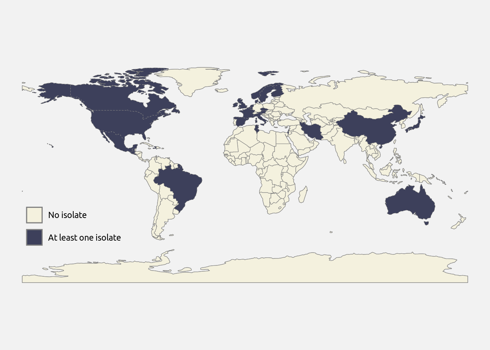
The data set consists in 3344 isolates, gathered from 24 between 1935 and 2019. Now, there is an enormous heterogeneity between countries regarding the number of isolates provided to the data set, as shown below.
Show the code
table_lefrancq_c <- as.data.frame(table(data_lefrancq$country))
colnames(table_lefrancq_c) <- c("country", 'n_isolates')
table_lefrancq_c <- table_lefrancq_c[order(table_lefrancq_c$n_isolates), ]
table_lefrancq_c$country <- factor(table_lefrancq_c$country,
levels = table_lefrancq_c$country)
ggplot(table_lefrancq_c) +
geom_col(aes(x = n_isolates, y = country), fill = "#3D405B") +
labs(x = "Number of isolates", y = "") +
theme_minimal() +
theme(text = element_text(family = "Ubuntu"),
panel.background = element_rect(fill = "transparent", color = NA),
plot.background = element_rect(fill = "transparent", color = NA))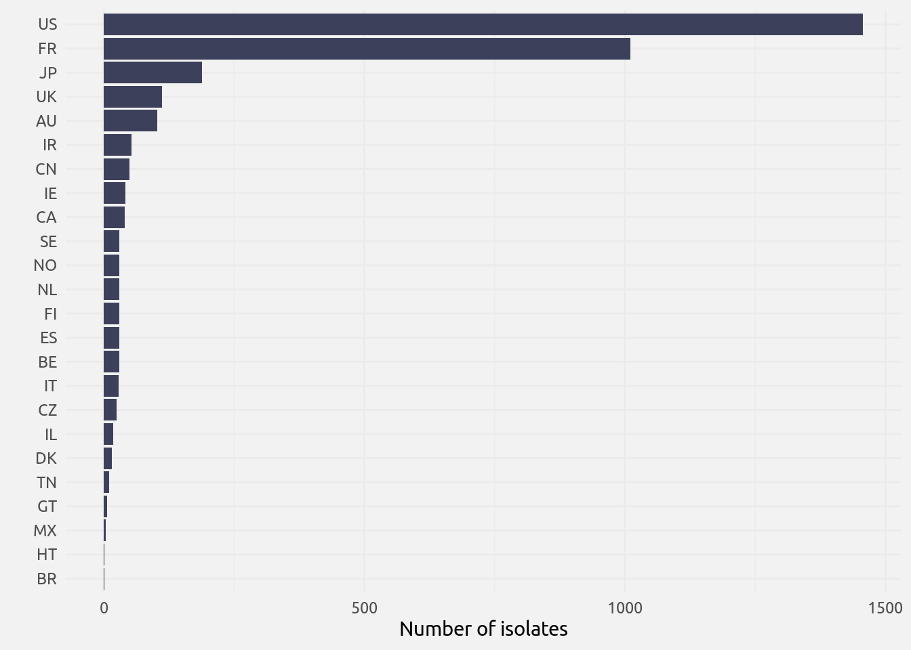
We can see that the two dominant countries, the United States (US) and France (FR), represent together 73.8 % of all the isolates. Thus, most countries in the data set cannot be studied the way we plan as there is too few data.
There also is a high heterogeneity in the period of isolation, as shown below.
Show the code
table_lefrancq_y <- as.data.frame(table(data_lefrancq$year_isolated))
colnames(table_lefrancq_y) <- c("year", 'n_isolates')
table_lefrancq_y$year <- as.numeric(as.character(table_lefrancq_y$year))
ggplot(table_lefrancq_y) +
geom_col(aes(x = year, y = n_isolates), fill = "#3D405B") +
labs(y = "Number of isolates", x = element_blank()) +
scale_x_continuous(breaks = seq(0, 2020, 10)) +
scale_y_continuous(breaks = seq(0, 750, 150)) +
coord_flip() +
theme_minimal(base_family = "Ubuntu")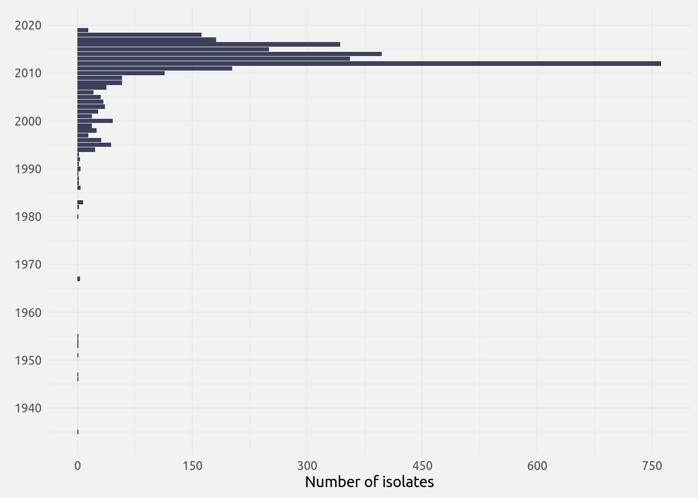
We can observe that most of the isolates (79.75) %) have been sampled after 2010. This means that our analyzes will have to be lead on short time spans (hardly more than two decades, or even less depending on the analysis).
The figure below summarizes the data shown in the two previous figures.
Show the code
table_lefrancq_cy <- as.data.frame(table(data_lefrancq$country,
data_lefrancq$year_isolated))
colnames(table_lefrancq_cy) <- c("country", "year", "n_isolates")
table_lefrancq_cy$year <- as.numeric(as.character(table_lefrancq_cy$year))
table_lefrancq_cy <- table_lefrancq_cy[order(table_lefrancq_cy$n_isolates), ]
table_lefrancq_cy$country <- factor(table_lefrancq_cy$country,
levels = names(table(data_lefrancq$country))[order(table(data_lefrancq$country))])
ggplot(table_lefrancq_cy) +
geom_point(aes(x = year, y = country, size = n_isolates), color = "#3D405B") +
scale_size(range = c(-.5, 6), breaks = c(20, 80, 160, 320)) +
labs(x = element_blank(), y = "", size = "Number of\nisolates") +
theme_minimal(base_family = "Ubuntu")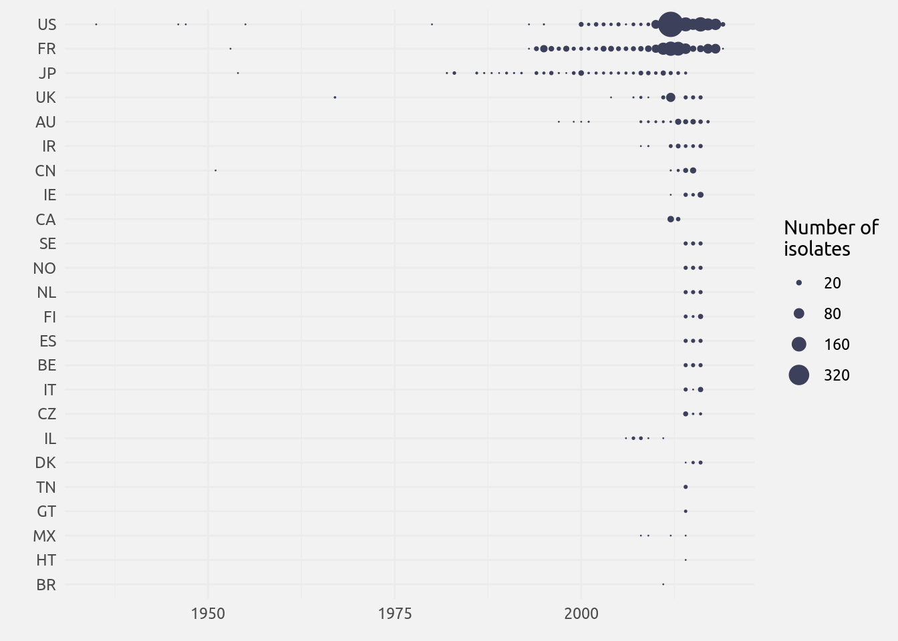
We decided to focus on the isolates coming from the United States for three reasons:
- an important part of the isolates come from this country;
- the origin of the isolates is given at the sub-national level (state), which will be useful for the analysis;
- variables needed for the analysis are easy to access in the United States.
We isolate the american strains this way:
data_lefrancq <- data_lefrancq[data_lefrancq$country == "US", ]Now, the data set has been reduced to 1457 isolates gathered between 1935 and 2019. From there, we decided to lead an analysis on the temporal spread of PRN-deficient strains. PRN, or pertactin, is a surface protein found in most Bordetella pertussis strains. As an antigen, it is part of most of the ACellular Vaccines (ACV) used against pertussis. These vaccines create selective pressures thought to favor strains lacking PRN, called PRN-deficient or PRN- strains (opposed to PRN-producing or PRN+ strains).
The dataset had thus to be filtered to only keep records from which we dispose of three information:
- The PRN+ or PRN- status of the isolate;
- The year of isolation;
- The state of isolation (used to make fine-scale analysis).
This filtering is simply done by removing rows lacking at least one of these information.
data_lefrancq <- na.omit(data_lefrancq[, c("year_isolated", "region", "prn_def")])This filtering reduces our data set to 1367 rows. We only need to keep the data starting from the year of the first occurrence of a PRN- in the United States which is the year 2007.
data_lefrancq <- data_lefrancq[data_lefrancq$year_isolated >= min(data_lefrancq$year_isolated[data_lefrancq$prn_def == "-"]), ]From there, we have our final data set, composed of 1302 rows. In the data set, we have the state of origin of our isolates. This will be useful in our analyzes, but before we can proceed we must do some formatting: we must convert the full-length names of the states to their postal code. This is needed to assure that everything matches in the future analyzes.
colnames(data_lefrancq)[grep("region", colnames(data_lefrancq))] <- "state"
colnames(data_lefrancq)[grep("year_isolated", colnames(data_lefrancq))] <- "year"
data_lefrancq$state[data_lefrancq$state == "New York State"] <- "New York"
data_lefrancq$state[data_lefrancq$state == "Washington State"] <- "Washington"
states_names <- read.table("data/states-names.txt", h = T, sep = "\t")
for (name in states_names$long) {
data_lefrancq$state[data_lefrancq$state == name] <- states_names$short[states_names$long == name]
}We may now save the “cleaned” data set into a new file. This will be useful for later use and to save us from reformatting the original file each time we need it.
# We write the file
write.table(data_lefrancq, file = "data/data-prn.txt", quote = F, row.names = F, sep = "\t")
# We read it
data_prn <- read.table("data/data-prn.txt", header = T, sep = "\t")
# We create a new object, table_prn, that will be useful later
table_prn <- as.data.frame(with(data_prn, table(year, state, prn_def)))[, c(2, 1, 3, 4)]
table_prn$year <- as.numeric(as.character(table_prn$year))The figure below shows which states have been sampled for B. pertussis isolates. We see that there are no isolates coming from quite a few states. Note that because a state has not been sampled does not mean the state did not reported pertussis cases. Also note that some states have provided isolates but only for years before the period of interest. The reasons of this heterogeneity in the distribution of the isolates is not known.
Show the code
us_map <- ne_states(country = "united states of america", returnclass = "sf")
us_map <- us_map[!(us_map$postal %in% c("AK", "HI")), ]
for (s in unique(us_map$postal)) {
if (s %in% data_prn$state) {
us_map$has_data[us_map$postal == s] <- "hasData"
}
else us_map$has_data[us_map$postal == s] <- "noData"
}
ggplot(us_map) +
geom_sf(aes(fill = has_data, linetype = has_data), color = "grey50") +
coord_sf(crs = "+proj=lcc +lon_0=-100 +lat_1=28 +lat_2=40") +
scale_fill_manual(values = c("#3D405B", "#F4F1DE"),
labels = c(paste("At least one isolate since", min(data_prn$year[data_prn$prn_def == "-"])),
paste("No isolate since", min(data_prn$year[data_prn$prn_def == "-"])))) +
labs(fill = element_blank()) +
guides(linetype = "none", fill = guide_legend(byrow = T)) +
theme_void() +
theme(text = element_text(family = "Ubuntu"),
legend.position = c(0.2, 0.14),
legend.spacing.y = unit(2, "mm"))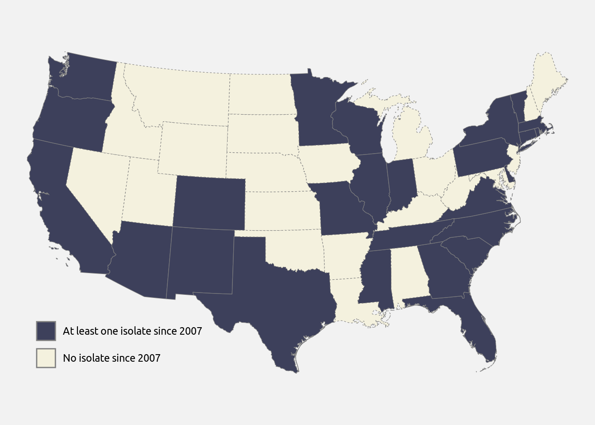
As mentioned earlier, our analysis of the American data set will rely on the availability of a lower level of geographical distribution of the isolates, which is their state of origin. We also said that we will focus in a first time on the spread of PRN- strains. The figure below shows the distribution of the isolates per state and per year, as well as the proportion of PRN- isolates, in the final data set.
Show the code
table_prn2 <- data.frame(state = as.character(table_prn$state[table_prn$prn_def == "-"]),
year = table_prn$year,
prop = table_prn$Freq[table_prn$prn_def == "-"] /
(table_prn$Freq[table_prn$prn_def == "-"] +
table_prn$Freq[table_prn$prn_def == "+"]),
freq = table_prn$Freq[table_prn$prn_def == "-"] +
table_prn$Freq[table_prn$prn_def == "+"])
ggplot(table_prn2) +
geom_point(aes(x = year,
y = state,
size = ifelse(freq == 0, NA, freq),
color = prop)) +
scale_size(range = c(1, 10), breaks = c(30, 90, 180)) +
scale_color_gradient2(low = "#ECA72C", mid = "#74A4BC", high = "#44355B", midpoint = 0.5,
na.value = "white", breaks = c(0, 1), labels = c("100% PRN+", "100% PRN-")) +
scale_x_continuous(breaks = seq(2007, 2019, 2)) +
guides(color = guide_colorbar(ticks = FALSE)) +
labs(size = "Number\nof isolates", x = element_blank(), y = "", color = element_blank()) +
theme_minimal() +
theme(text = element_text(family = "Ubuntu"))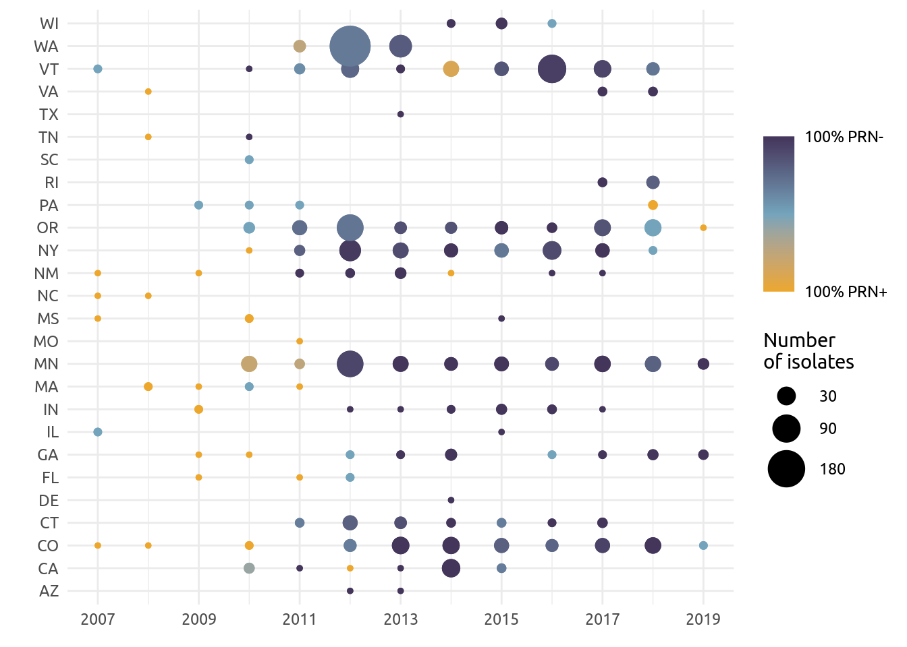
Ultimately, what will interest us is to explain the increased frequency of PRN- isolates in the United States during the period 2007 to 2019, regardless of the state of origin. The information about the state of origin will only be kept in the calculation of the variables values. In the figure below, we can see how the proportion of PRN- isolates changes with time.
Show the code
count_strains = with(data_prn, tapply(prn_def, list(year, prn_def), length))
count_strains[is.na(count_strains)] <- 0
data_count = data.frame(year = as.numeric(rownames(count_strains)),
PRNm = count_strains[, 1],
PRNp = count_strains[, 2],
prop = count_strains[, 1] / (count_strains[, 1] + count_strains[, 2]))
ggplot(data_count) +
geom_point(aes(x = year, y = prop)) +
scale_x_continuous(breaks = seq(min(data_count$year), max(data_count$year), 2)) +
labs(x = element_blank(), y = "Proportion of PRN- strains") +
coord_cartesian(ylim = c(0, 1)) +
theme_minimal(base_family = "Ubuntu")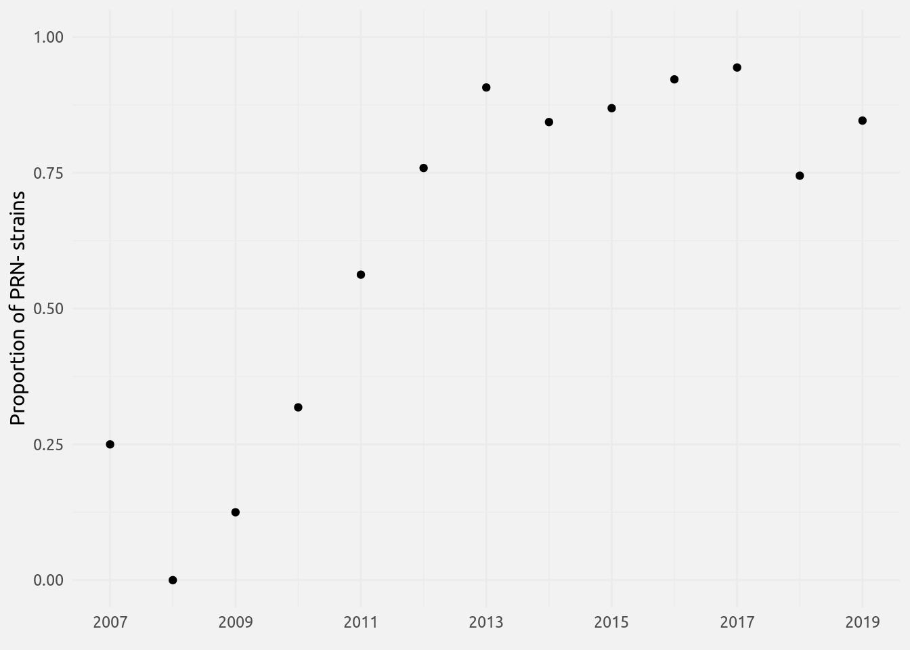
The variables
Our first interest was to check if different variables could help to understand the structure of our data. These variables were meant to be included in a sort of GLM, as described in the “Analyzes” page, “GLM” section.
The density data
The first variable we wanted to introduce in the model is the population density. To obtain the population density at the state scale for each year, two variables are needed: the population size of the state each year, and the state area.
For the population size, surveys are conducted every 10 years and available on the website of the United States Census Bureau (last accessed on 01/11/2023). To intrapolate the population sizes between two surveys, a simple method consists in considering that the population grows linearly between two surveys. Thus, we have:
\[ P_j\left(x+y\right)=P_j\left(x\right)+\frac{P_j\left(x + 10\right)-P_j\left(x\right)}{10}\times y \] with \(P_j\left(x\right)\) the population in the state \(j\) for the decade \(x\) and \(y\in\left(1, 2, ..., 9\right)\) the year in the decade for which we want to calculate the population size.
data_census <- read.table("data/census-us.txt", header = T, sep = "\t")
for(x in c(2010, 2020)) { # We only need this time range
for(y in 1:9) {
val = (data_census[data_census$year == x, "pop"] -
data_census[data_census$year == x - 10, "pop"]) / 10
data_census = rbind(data_census,
data.frame(year = x - 10 + y,
state = data_census$state[data_census$year == x],
pop = data_census$pop[data_census$year == x - 10] +
val * y))
}
}The land area of each state is also available on the website of the United States Census Bureau (last accessed on 11/01/2023). These data date back from 2010 but I believe it is safe to assume the geography of the U.S. has not changed much since this period.
data_area <- read.table("data/area-us.txt", header = T, sep = "\t")It is now possible to calculate the population densities for each state and each year.
data_density = cbind(data_census, area = 0)
for (x in data_area$state) {
data_density$area[data_density$state == x] <- data_area$area[data_area$state == x]
}
data_density$density = data_density$pop / data_density$area
# We change states names with abreviations
for (state in data_density$state) {
data_density$state[data_density$state == state] <- states_names$short[states_names$long == state]
}
# With these two lines, we keep the density only from years and states in the range of interest, and order the output.
data_density <- data_density[data_density$state %in% data_prn$state
& data_density$year %in% 2007:2019, ]
data_density <- data_density[order(data_density$year, data_density$state), ]
# Keeping the data set in a file for later use
data_density <- data_density[, c(2, 1, 5)]
data_density <- data_density[order(data_density$state, data_density$year), ]
write.table(data_density, file = "data/dens-us.txt", sep = "\t",
quote = F, row.names = F)Below, we can see the density curves of the annual population density for each state included in the Lefrancq data set, for the period 2007-2019.
Show the code
ggplot(data_density) +
geom_density_ridges_gradient(aes(y = state, x = density, fill = after_stat(x)),
rel_min_height = 0.02, show.legend = F, color = "grey") +
scale_fill_viridis_c(option = "E") +
labs(x = "Annual population density for the period 2007-2019 (hab/km²)", y = element_blank()) +
theme_minimal(base_family = "Ubuntu") +
theme(panel.background = element_rect(fill = "transparent", color = NA),
plot.background = element_rect(fill = "transparent", color = NA))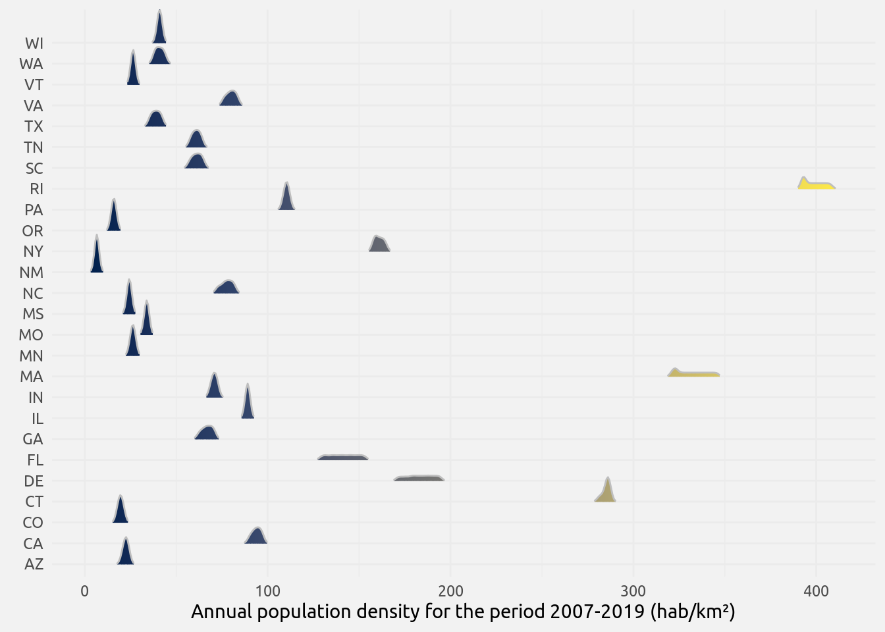
We can see that there is a good variability in the population density between states, while the variability intra-state (i.e., inter-annual) is pretty low. This is expected: during the 13 years studied, there is no major event justifying a profound change in population density for any state (as far as I am aware).
As a variable in the model, I use a weighted mean of the population density, \(\delta_k^i\), calculated using the following formula:
\[ \delta_k^i=\frac{\sum_{j=1}^sn_{j,k-1}^iD_{j,k-1}+\delta_{k-1}^i}{\sum_{j=1}^sn_{j,k-1}^i+1}\forall k>0 \]
where \(n_{j,k}^i\) is the number of isolates of type \(i\) (with \(i\in\left(1,2\right)\), \(1\) meaning PRN- and \(2\) meaning PRN+) recovered in state number \(j\) at year \(k\), and \(D_{j,k}\) is the density of state number \(k\). The term \(\delta_{k-1}^i\) in the numerator, compensated by the term \(+1\) in the denominator, is used to assure that even if we have no isolate \(i\) one year the denominator is not equal to \(0\). We pose \(\delta_0^i=0\).
The code chunk below calculates the values of \(\delta_k^1\) and \(\delta_k^2\) and stores them in two vectors, delta1 and delta2.
table_prn$density <- data_density$density
k_years <- seq(min(table_prn$year), max(table_prn$year))
delta1 = delta2 = 0
for (k in 2:length(unique(table_prn$year))) {
delta1 = c(delta1, with(table_prn[table_prn$year == k_years[k - 1]
& table_prn$prn_def == "-", ],
(sum(Freq * density) + delta1[k - 1]) / (sum(Freq) + 1)))
delta2 = c(delta2, with(table_prn[table_prn$year == k_years[k - 1]
& table_prn$prn_def == "+", ],
(sum(Freq * density) + delta2[k - 1]) / (sum(Freq) + 1)))
}The table below shows the values of \(\delta_k^1\) and \(\delta_k^2\).
| \(\delta_k^1\) | \(\delta_k^2\) | Year |
|---|---|---|
| 0.00000 | 0.00000 | 2007 |
| 38.12419 | 33.55982 | 2008 |
| 38.12419 | 129.14558 | 2009 |
| 73.68722 | 113.03163 | 2010 |
| 65.74836 | 52.42812 | 2011 |
| 65.90083 | 69.77140 | 2012 |
| 55.03409 | 42.52095 | 2013 |
| 60.99292 | 73.76657 | 2014 |
| 74.35616 | 27.39589 | 2015 |
| 55.20182 | 97.57169 | 2016 |
| 55.87201 | 66.99030 | 2017 |
| 65.93721 | 27.25318 | 2018 |
| 74.41435 | 68.50887 | 2019 |
The values are not used in this form as variables. What I used is the difference between \(\delta_k^1\) and \(\delta_k^2\) (called \(\Delta_k^D\)) and the mean value between \(\delta_k^1\) and \(\delta_k^2\) (called \(\mu_k^D\)):
\[ \begin{align} & \Delta_k^D=\delta_k^1-\delta_k^2 \\ & \mu_k^D=\frac{\delta_k^1+\delta_k^2}{2} \end{align} \]
The code to obtain the vectors of these two variables is:
Delta_D = delta1 - delta2
mu_D = (delta1 + delta2) / 2The values of these two vectors are shown in the table below.
| \(\Delta_k^D\) | \(\mu_k^D\) | Year |
|---|---|---|
| 0.000000 | 0.00000 | 2007 |
| 4.564363 | 35.84201 | 2008 |
| -91.021393 | 83.63488 | 2009 |
| -39.344411 | 93.35942 | 2010 |
| 13.320239 | 59.08824 | 2011 |
| -3.870576 | 67.83612 | 2012 |
| 12.513145 | 48.77752 | 2013 |
| -12.773653 | 67.37974 | 2014 |
| 46.960271 | 50.87603 | 2015 |
| -42.369871 | 76.38675 | 2016 |
| -11.118289 | 61.43116 | 2017 |
| 38.684023 | 46.59519 | 2018 |
| 5.905484 | 71.46161 | 2019 |
The temperature data
To access quality temperature data from the United States was way harder than to access density data. The reference in the United States to retrieve climate data is the Global Historical Climatology Network daily (GHCNd) website (last accessed on 13/01/2023). Their data is directly available through an HTTPS portal, thus making it easy to automatically download interesting data. Note though that too much requests on the servers will cause the connection to the server to shut down.
The first step is to download a file available on the server containing the metadata of the meteorological stations from the network. The file is available here (last accessed on 18/01/2023). For commodity, we save the file on our local drive instead of downloading it each time we need it.
list_stations <- readLines("data/ghcnd-stations.txt")The problem with the file is that it is oddly written: fields are not separated by a consistent character, but written in a way such that the values of a field are perfectly aligned along all the lines. This would not be a problem if all values for a field were the same length, but it is not the case. For example, the station name can have a few or many letters, so a variable number of spaces will separate this field from the next one. Because of that, it is necessary to create a new, cleaned file. Not that because list_stations is a big data frame ( rows), creating the cleaned version takes time. It is thus better to save the new data frame in a file and to load this file for later uses.
data_stations = data.frame(id = character(length(list_stations)),
lat = character(length(list_stations)),
lon = character(length(list_stations)),
alt = character(length(list_stations)),
state = character(length(list_stations)))
cat("id\tlat\tlon\talt\tstate\n", file = "data/ghcnd-stations-cleaned.txt")
for (x in 1:length(list_stations)) {
xx <- c(id = substr(list_stations[x], 1, 11),
lat = as.numeric(substr(list_stations[x], 13, 20)),
lon = as.numeric(substr(list_stations[x], 22, 30)),
alt = as.numeric(substr(list_stations[x], 32, 37)),
state = substr(list_stations[x], 39, 40))
cat(paste(xx), sep = "\t", file = "data/ghcnd-stations-cleaned.txt", append = T)
cat("\n", file = "data/ghcnd-stations-cleaned.txt", append = T)
}At this point, we have a list of meteorological stations, with their coordinates and a bunch of other information available. There is no interest in keeping all these stations, so we will apply a list of filters to only keep the stations that may be useful. The variable of interest is the average daily temperature, which will later be converted to a state-based average annual temperature.
list_stations <- read.table("data/ghcnd-stations-cleaned.txt", header = T, sep = "\t")On the 122047 included in the network, not all are located in the United States. Fortunately, is is easy to filter only the stations from the US.
list_stations <- list_stations[grep("US", list_stations$id), ]Now, we only need to keep the stations from states included in the PRN data frame.
list_stations <- list_stations[list_stations$state %in% unique(data_prn$state), ]From there it gets a little more technical. Not all stations from the network record the same meteorological variables, and not all stations were in activity during the same period. The “perfect” variable for our study would be “TAVG”, which represents the average temperature recorded each day. The problem is that this variable is not available in any station in some states included in our study. For this reason, we will use another variable, “TMEAN”, which will be calculated as the mean value between “TMIN” (the minimum temperature recorded one day) and “TMAX” (the maximum temperature recorded one day).
To now which station was active during the period of interest and recorded the variables of interest (TMIN and TMAX), we need another file from the GHCNd website, available here (last accessed on 18/01/2023).
inventory <- read.table("data/ghcnd-inventory.txt",
col.names = c("id", "lat", "lon", "var", "start", "end"))We can now use this file to filter list_stations to only keep informative stations.
list_stations <- list_stations[list_stations$id %in% inventory$id[inventory$var == "TMAX"
& inventory$start <= 2007
& inventory$end >= 2019], ]
list_stations <- list_stations[list_stations$id %in% inventory$id[inventory$var == "TMIN"
& inventory$start <= 2007
& inventory$end >= 2019], ]In the end, there are 4152 stations kept. The map below shows the geographical distribution of the stations used in the study. We can see that the stations are nicely distributed among and within the states, thus we have a good depiction of the average temperature for each state in the study.
Show the code
xy <- sf_transform_xy(data = data.frame(x = list_stations$lon, y = list_stations$lat),
target_crs = "+proj=lcc +lon_0=-100 +lat_1=28 +lat_2=40",
source_crs = "+proj=longlat +ellps=WGS84 +datum=WGS84 +no_defs +towgs84=0,0,0")
ggplot(us_map) +
geom_sf(fill = "#F4F1DE", color = "grey50") +
geom_point(data = xy, aes(x = x, y = y), color = "#3D405B") +
coord_sf(crs = "+proj=lcc +lon_0=-100 +lat_1=28 +lat_2=40") +
theme_void() +
theme(text = element_text(family = "Ubuntu"))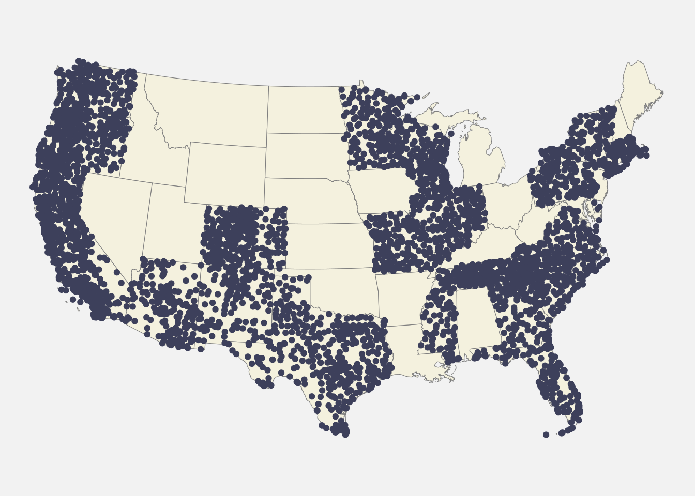
Now that we have a list of the stations of interest, we download the files corresponding to the data recorded for each of these stations. I have explored several ways to download these data, but below is what I believe is the more practical way among those I tested.
Note that downloading all the files is highly time-consuming and should be done only once. It is also possible that during some periods the servers are in maintenance and thus the data cannot be downloaded.
The first step is to define the time range from which we want to download the data. By doing so we reduce the size of the downloaded files. The starting and ending times must be given under the “YYYY-MM-DD” format. Note that even if a station did not record data from some times in the wanting time range, it will still be downloaded anyway Below is a list of examples of stations included or not.
If a station did not record data in June 2011 but downloaded data during the rest of the time range, it will still be downloaded.
If a station stopped recording data in February 2019 it will be downloaded.
If it stopped in 2019 it will not be downloaded, as the station would have been filtered out in the previous parts of this document.
Below is the code to setup the starting and ending times.
start = paste0(min(table_prn$year), "-01-01")
end = paste0(max(table_prn$year), "-12-31")Now it is possible to download the stations data by directly connecting to the server hosting them. But before, let’s define a variable which will keep track of the advancement of the download. Thus, if it crashes part way, the code will not start downloading all the stations from the beginning.
ndl = length(list.files("data/temperature-us-ghcnd-tmaxtmin/"))Now we can download the files.
if (ndl != length(list_stations$id)) {
x = ndl
for (id in list_stations$id[(ndl + 1):length(list_stations$id)]) {
url <- paste0("https://www.ncei.noaa.gov/access/services/data/v1?dataset=daily-summaries&startDate=",
start,
"&endDate=",
end,
"&stations=",
id,
"&format=csv")
data <- read.csv(url)
data <- data[, c("STATION", "DATE", "TAVG", "TMAX", "TMIN")]
write.table(data, paste0("data/temperature-us-ghcnd-tmaxtmin/", id, ".txt"),
quote = F, row.names = F, sep = "\t")
x = x + 1
print(x)
}
} else print("All stations already downloaded!")Once downloaded, the data set is comprised of 4152 files with a variable number of rows (most of them have between 4,000 and 5,000 rows, data not shown). Since we only need the temperature data per year and per state, we summarize the data from the files into one unique file.
cat("state\tyear\ttemp\ttemp_avg\n", file = "data/temp-us.txt")
list_of_files <- list()
for (state in unique(list_stations$state)) {
list_of_files[[state]] <- list_stations$id[list_stations$state == state]
}
for (state in sort(unique(list_stations$state))) {
yy = data.frame(tmean = numeric(), tavg = numeric(), year = numeric())
tmp <- tempfile()
cat("STATION\tDATE\tTAVG\tTMAX\tTMIN\n", file = tmp)
for (station in list_of_files[[state]]) {
xx <- read.table(paste0("data/temperature-us-ghcnd-tmaxtmin/", station, ".txt"),
header = T, sep = "\t")
write.table(xx, file = tmp, append = T, sep = "\t", quote = F,
row.names = F, col.names = F)
}
xx <- read.table(tmp, header = T, sep = "\t")
if (nrow(xx) != 0) { # For an unknown reason some files are empty
# To remove or not aberrant values?
# xx$TMAX[xx$TMAX > 500 | xx$TMAX < -500] <- NA
# xx$TMIN[xx$TMIN > 500 | xx$TMIN < -500] <- NA
# xx$TAVG[xx$TAVG > 500 | xx$TAVG < -500] <- NA
year = substr(xx$DATE, 1, 4)
tmean = (xx$TMAX + xx$TMIN) / 20
tavg = xx$TAVG / 10
xx <- data.frame(state = state,
year = unique(year),
temp = tapply(tmean, year, mean, na.rm = T),
temp_avg = tapply(tavg, year, mean, na.rm = T))
# xx <- xx[order(xx$state, xx$year), ]
write.table(xx, file = "data/temp-us.txt", append = T, quote = F, sep = "\t",
row.names = F, col.names = F)
}
}The previous chunk takes some time to run, so it is better not to redo it each time. It is now possible to simply read the file.
data_temp <- read.table("data/temp-us.txt", header = T, sep = "\t")Below, I plot the values of (TMIN + TMAX) / 2 (called \(T_{mean}\) below and temp in the data frame) against TAVG (called \(T_{avg}\) below and temp_avg in the data set) for the 320 out of the nrow(data_temp) rows from data_temp for which we have both temp and temp_avg values.
Show the code
library(ggplot2)
coeff <- coefficients(lm(temp_avg ~ temp, data = data_temp, na.action = "na.omit"))
r2 = round(cor(data_temp$temp_avg, data_temp$temp, use = "n") ** 2, 3)
ggplot(data_temp) +
geom_point(aes(x = temp,
y = temp_avg,
color = as.factor(year)),
show.legend = T) +
geom_abline(slope = 1, intercept = 0, linetype = "dashed") +
geom_abline(slope = coeff[2], intercept = coeff[1]) +
scale_color_viridis_d(option = "E") +
guides(shape = "none") +
labs(x = bquote(T[mean]), y = bquote(T[avg]), color = "Year") +
ggtitle(bquote(R**2==.(r2))) +
theme_minimal(base_family = "Ubuntu")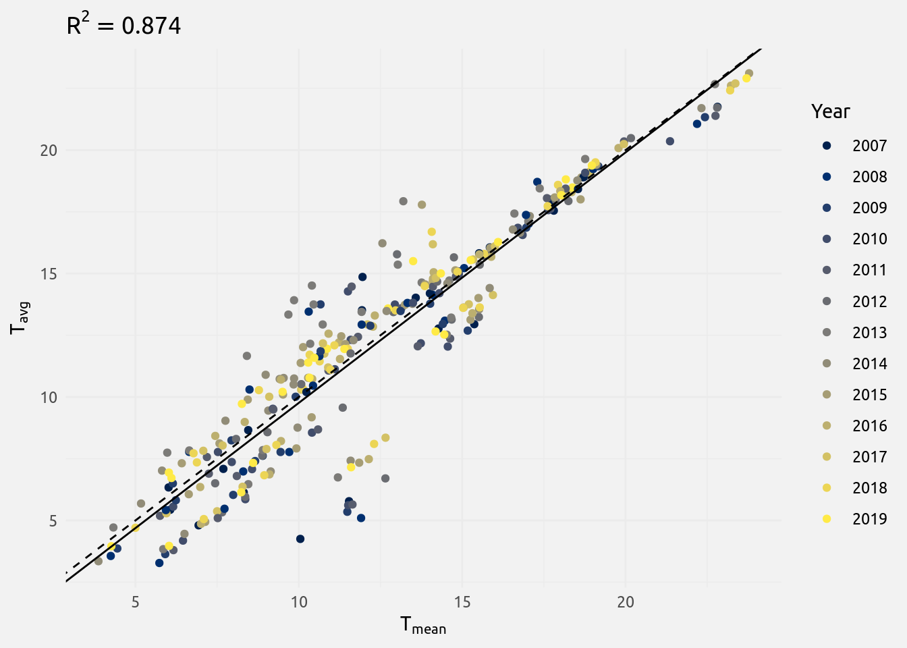
The solid line is the line of equation \(T_{mean}=T_{avg}\) while the dashed line is the line of equation \(T_{mean}=-0.382+1.014T_{avg}\). We see that the dashed line is pretty close to the solid line, indicating that \(T_{mean}\) is a good predictor of \(T_{avg}\). Nevertheless, there is some variance in the data (\(R^2=0.874\)).
The plot below shows the spatio-temporal distribution of the mean temperatures. We see that we have a wide diversity of temperatures among the different states, with Minnesota being the coldest state with a mean temperature of \(5.471\) °C, and Florida being the warmest state with a mean temperature of \(22.823\) °C. We also see that there is a relatively high inter-annual intra-state fluctuation.
Show the code
ordered_state <- with(data_temp, factor(state,
levels = names(sort(tapply(temp, state, mean)))))
ggplot(data_temp) +
geom_density_ridges_gradient(aes(y = ordered_state, x = temp, fill = after_stat(x)),
rel_min_height = 0.01, show.legend = F, color = "grey") +
scale_fill_viridis_c(option = "E") +
labs(x = "Mean annual temperature (°C)", y = element_blank()) +
theme_minimal(base_family = "Ubuntu")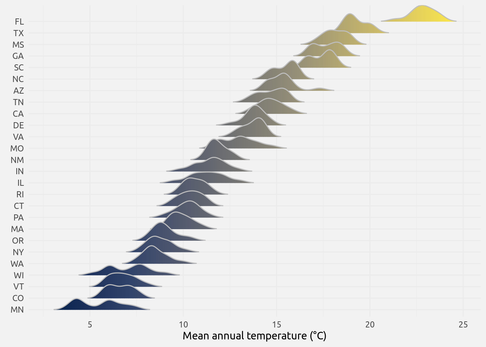
It is now possible to calculate the values of the variables as they will be included in the analyzes. We use formulas similar to those used for the density. To begin, we calculate a weighted mean of the annual temperature, \(\theta_k^i\), calculated using the following formula:
\[ \theta_k^i=\frac{\sum_{j=1}^sn_{j,k-1}^iT_{j,k-1}+\theta_{k-1}^i}{\sum_{j=1}^sn_{j,k-1}^i+1}\forall k>0 \]where \(n_{j,k}^i\) is the number of isolates of type \(i\) (with \(i\in\left(1,2\right))\), \(1\) meaning PRN- and \(2\) meaning PRN+) isolated in the state number \(j\) during year \(k\), and \(T_{j,k}\) is the average temperature of state \(j\) during year\(k\). The term \(\theta_{k-1}^i\) in the numerator, compensated by the term \(+1\) in the denominator, is used to assure that even if we have no strain \(i\) one year the denominator is not equal to \(0\). We pose \(\theta_k^i=0\).
The code chunk below calculates the values of \(\theta_k^1\) and \(\theta_k^2\) and stores them in two vectors, theta1 and theta2.
table_prn$temp <- data_temp$temp
theta1 = theta2 = 0
for (k in 2:length(unique(table_prn$year))) {
theta1 = c(theta1, with(table_prn[table_prn$year == k_years[k - 1] # or k - 1??
& table_prn$prn_def == "-", ],
(sum(Freq * temp) + theta1[k - 1]) / (sum(Freq) + 1)))
theta2 = c(theta2, with(table_prn[table_prn$year == k_years[k - 1] # or k - 1??
& table_prn$prn_def == "+", ],
(sum(Freq * temp) + theta2[k - 1]) / (sum(Freq) + 1)))
}The table below shows the values of \(\theta_k^1\) and \(\theta_k^2\).
| \(\theta_k^1\) | \(\theta_k^2\) | Year |
|---|---|---|
| 0.000000 | 0.000000 | 2007 |
| 5.988740 | 10.118569 | 2008 |
| 5.988740 | 11.064092 | 2009 |
| 7.715485 | 12.738027 | 2010 |
| 9.672391 | 9.160647 | 2011 |
| 8.812708 | 8.851537 | 2012 |
| 8.666007 | 8.737420 | 2013 |
| 7.941701 | 8.639783 | 2014 |
| 10.166629 | 6.485076 | 2015 |
| 8.415680 | 8.336725 | 2016 |
| 8.088496 | 8.782097 | 2017 |
| 8.314928 | 8.210013 | 2018 |
| 8.478996 | 8.508614 | 2019 |
The values are not used in this form as cofactors. What we used is the difference between \(\delta_k^1\) and \(\delta_k^2\) (called \(\Delta_k^D\)) and the mean value between \(\delta_k^1\) and \(\delta_k^2\) (called \(\mu_k^D\)):
\[ \begin{align} & \Delta_k^T=\theta_k^1-\theta_k^2 \\ & \mu_k^T=\frac{\theta_k^1+\theta_k^2}{2} \end{align} \]
The code to obtain the two vectors containing these variables is:
Delta_T = theta1 - theta2
mu_T = (theta1 + theta2) / 2The values of these two vectors are shown in the table below.
| \(\Delta_k^T\) | \(\mu_k^T\) | Year |
|---|---|---|
| 0.0000000 | 0.000000 | 2007 |
| -4.1298296 | 8.053654 | 2008 |
| -5.0753528 | 8.526416 | 2009 |
| -5.0225421 | 10.226756 | 2010 |
| 0.5117444 | 9.416519 | 2011 |
| -0.0388299 | 8.832123 | 2012 |
| -0.0714132 | 8.701714 | 2013 |
| -0.6980828 | 8.290742 | 2014 |
| 3.6815527 | 8.325852 | 2015 |
| 0.0789554 | 8.376202 | 2016 |
| -0.6936005 | 8.435296 | 2017 |
| 0.1049146 | 8.262470 | 2018 |
| -0.0296178 | 8.493805 | 2019 |
Conclusion
Now that we have prepared the data we want to analyse (object data_prn) and the variables that we will use to study these data (objects Delta_D, mu_D, Delta_T and mu_T), we will save them into one simple final object that we will read during our analyzes.
The first thing to do is to convert the data_prn classical table into a contingency table.
count_strains = tapply(data_prn$prn_def, list(data_prn$year, data_prn$prn_def), length)
count_strains[is.na(count_strains)] <- 0Finally, we create and save the data frame containing all we need for our analyzes.
data_analyzes <- data.frame(year = unique(data_prn$year),
PRNm = count_strains[, 1],
PRNp = count_strains[, 2],
Delta_D = Delta_D,
mu_D = mu_D,
Delta_T = Delta_T,
mu_T = mu_T)
write.table(data_analyzes, "data/data-analyzes.txt", sep = "\t",
quote = F, row.names = F)